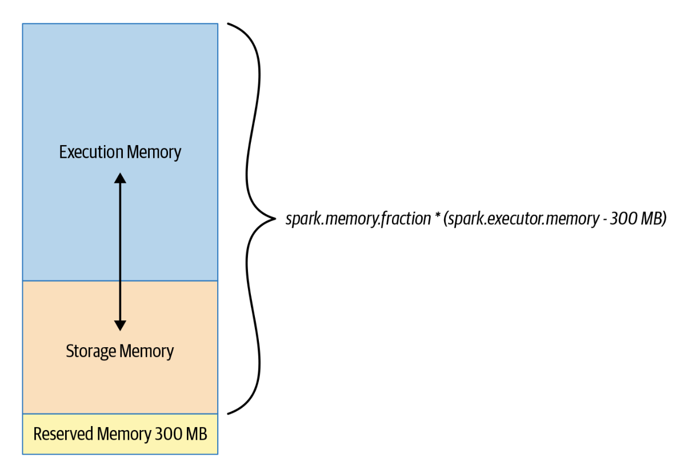

from pyspark.sql import SparkSession
from pyspark.sql.functions import col
from pyspark import StorageLevelTuning and Optimizing Spark
# Ignore warnings
import warnings
warnings.filterwarnings("ignore")spark = SparkSession.builder.getOrCreate()23/05/06 14:16:22 WARN Utils: Your hostname, thulasiram resolves to a loopback address: 127.0.1.1; using 192.168.0.105 instead (on interface wlp0s20f3)
23/05/06 14:16:22 WARN Utils: Set SPARK_LOCAL_IP if you need to bind to another addressSetting default log level to "WARN".
To adjust logging level use sc.setLogLevel(newLevel). For SparkR, use setLogLevel(newLevel).23/05/06 14:16:22 WARN NativeCodeLoader: Unable to load native-hadoop library for your platform... using builtin-java classes where applicableManaging Spark Configurations
- we can check the spark environment variables configuration through
Spark UI - check if the spark configuration is modifiable using
spark.conf.isModifiable()method - We can change spark configurations using command line arguments to
spark-submitor change it in the SparkSession
- Order of precedence for the configurations - spark-defaults.conf, spark-submit, SparkSession
spark.conf.isModifiable("spark.sql.shuffle.partitions")TrueSetting and Getting Spark Configurations
spark.conf.get("spark.sql.shuffle.partitions")'200'spark.conf.set("spark.sql.shuffle.partitions", 6)spark.conf.get("spark.sql.shuffle.partitions")'6'Scaling Spark for Large Workloads
The spark configurations affect three spark components
* Spark Driver * The executor * Shuffle service running on the executor
Static Versus Dynamic Resource Allocation
- Providing spark configurations as command-line arguments to
spark-submitwill cap the limit of the resources (It is static) - If we use dynamic resource allocation, spark driver can request more or fewer compute resources
# Some configurations can be set using spark REPL
spark.conf.get("spark.dynamicAllocation.enabled")Py4JJavaError: An error occurred while calling o24.get.
: java.util.NoSuchElementException: spark.dynamicAllocation.enabled
at org.apache.spark.sql.errors.QueryExecutionErrors$.noSuchElementExceptionError(QueryExecutionErrors.scala:1678)
at org.apache.spark.sql.internal.SQLConf.$anonfun$getConfString$3(SQLConf.scala:4577)
at scala.Option.getOrElse(Option.scala:189)
at org.apache.spark.sql.internal.SQLConf.getConfString(SQLConf.scala:4577)
at org.apache.spark.sql.RuntimeConfig.get(RuntimeConfig.scala:72)
at java.base/jdk.internal.reflect.NativeMethodAccessorImpl.invoke0(Native Method)
at java.base/jdk.internal.reflect.NativeMethodAccessorImpl.invoke(NativeMethodAccessorImpl.java:62)
at java.base/jdk.internal.reflect.DelegatingMethodAccessorImpl.invoke(DelegatingMethodAccessorImpl.java:43)
at java.base/java.lang.reflect.Method.invoke(Method.java:566)
at py4j.reflection.MethodInvoker.invoke(MethodInvoker.java:244)
at py4j.reflection.ReflectionEngine.invoke(ReflectionEngine.java:357)
at py4j.Gateway.invoke(Gateway.java:282)
at py4j.commands.AbstractCommand.invokeMethod(AbstractCommand.java:132)
at py4j.commands.CallCommand.execute(CallCommand.java:79)
at py4j.ClientServerConnection.waitForCommands(ClientServerConnection.java:182)
at py4j.ClientServerConnection.run(ClientServerConnection.java:106)
at java.base/java.lang.Thread.run(Thread.java:829)# Setting the config programaticallyfrom pyspark import SparkConfconf = (SparkConf()
.setAppName("MyApp")
.setMaster("local")
)conf.set("spark.dynamicAllocation.enabled", True)<pyspark.conf.SparkConf at 0x7f0e18ec8b20>conf.get("spark.dynamicAllocation.enabled")'True'spark = SparkSession.builder.config(conf=conf).getOrCreate()23/05/06 14:16:36 WARN SparkSession: Using an existing Spark session; only runtime SQL configurations will take effect.spark.conf.get("spark.dynamicAllocation.enabled")'True'Set the following for dynamic allocation
* spark.dynamicAllocation.enabled true
* spark.dynamicAllocation.minExecutors 2
* spark.dynamicAllocation.maxExecutors 20
* spark.dynamicAllocation.schedulerBacklogTimeout 1m
* spark.dynamicAllocation.executorIdleTimeout 2min
New executors will be requested each time the backlog timeout (spark.dynamicAllocation.schedulerBacklogTimeout) is exceeded. In this case, whenever there are pending tasks that have not been scheduled for over 1 minute, the driver will request that a new executor be launched to schedule backlogged tasks, up to a maximum of 20. By contrast, if an executor finishes a task and is idle for 2 minutes (spark.dynamicAllocation.executorIdleTimeout), the Spark driver will terminate it.
Configuring Spark Executors Memory
- The amount of memory available to each executor is controlled by
spark.executor.memory - Executor memory is divided into three sections:
- Execution Memory (60%)
- Storage Memory (40%)
- Reserved Memory (300 MB)
- we can adjust the configuration
- If storage memory is not being used, spark can use it for execution memory and vice-versa

conf.get("spark.memory.fraction")conf.set("spark.memory.fraction", 0.5)<pyspark.conf.SparkConf at 0x7f0e18ec8b20>conf.get("spark.memory.fraction")'0.5'- Execution Memory is used for shuffles, joins, sorts & aggregations
- Storage memory is used for caching user data structures and partitions derived from DataFrame
Maximizing Spark Parallelism
- A spark job will have many stages and within each stage there will be many tasks
- Spark will schedule a task per core
- Each task will process a partition
- Ideal is to have as many partitions as there are cores on the executor
- The size of partition in spark is given by
spark.sql.files.maxPartitionBytes(default is 128MB) - Decreasing the size will result in “small file problem†and increase disk I/O and performance degradation
- We can control the number of partitions
spark.conf.get("spark.sql.files.maxPartitionBytes")'134217728b'path_to_data = '/home/thulasiram/personal/data_engineering/data/car_data.csv'df = (spark.read.format("csv")
.option("inferSchema", "true")
.option("header", "true")
.load(path_to_data)).repartition(6)df.rdd.getNumPartitions()23/05/06 14:16:41 WARN CSVHeaderChecker: CSV header does not conform to the schema.
Header: , make, fuel_type, aspiration, num_of_doors, body_style, drive_wheels, engine_location, wheel_base, length, width, height, curb_weight, engine_type, num_of_cylinders, engine_size, fuel_system, compression_ratio, horsepower, peak_rpm, city_mpg, highway_mpg, price
Schema: _c0, make, fuel_type, aspiration, num_of_doors, body_style, drive_wheels, engine_location, wheel_base, length, width, height, curb_weight, engine_type, num_of_cylinders, engine_size, fuel_system, compression_ratio, horsepower, peak_rpm, city_mpg, highway_mpg, price
Expected: _c0 but found:
CSV file: file:///home/thulasiram/personal/data_engineering/data/car_data.csv6Shuffle Partitions
- Shuffle partitions are created during the shuffle stage
- By default shuffle partitions are set to 200
- The default value is too high for small workloads
- During
groupBy()orjoin()operations network and disk I/O is consumed. Shuffle will spill results to executors local disks. SSD disks will boost the performance - Number of shuffle partitions will depend on the use case, data set, number of cores and executor memory available
Caching and Persistence
persist()provides more control on how and where the data is stored - in Memory or on Disk, serialized or unserialized etc.cache()will store as many of the partitions read in memory across executorsDataFrame may be fractionally cached
Partitions cannot be fractionally cached
When all partitions are not cached, when we access the data, partitions that are not cached will be recomputed
DataFrame is not cached until we invoke an action
df = spark.range(1 * 10000).toDF("id").withColumn("square", col("id") * col("id"))
df.cache()DataFrame[id: bigint, square: bigint]# df will be cached when we call an action
# It takes 0.5 seconds to compute the first time
df.count()10000# Second time will be accessed from the cache and hence faster
df.count()10000Persist
- we can control where is data is stored using
storageLevelargument MEMORY_ONLY- Stored only in memoryMEMEORY_ONLY_SER- Data is serialized and stored in memoryMEMORY_AND_DISK- Data is stored in memory and if the memory is insufficient, then data is serialized and stored on diskDISK_ONLY- Data is serialized and stored on diskMEMORY_AND_DISK_SER- Data is serialized and stored in memory
df_2 = spark.range(1 * 10000).toDF("id").withColumn("square", col("id") * col("id"))
df_2.persist(StorageLevel.DISK_ONLY)23/05/06 14:32:44 WARN CacheManager: Asked to cache already cached data.DataFrame[id: bigint, square: bigint]df_2.count()10000# To unpersist data
df_2.unpersist()DataFrame[id: bigint, square: bigint]# we can cache tables and views as well
df_2.createOrReplaceTempView("df_table")
spark.sql("CACHE TABLE df_table")
spark.sql("SELECT count(*) from df_table").show()+--------+
|count(1)|
+--------+
| 10000|
+--------+
When to Cache and Persist
- Cache data which is frequently used
- Dataframes used iteratively
When not to Cache and Persist
- DataFrames that are too big to fit in memory
- An inexpensive transformation not requiring frequent use